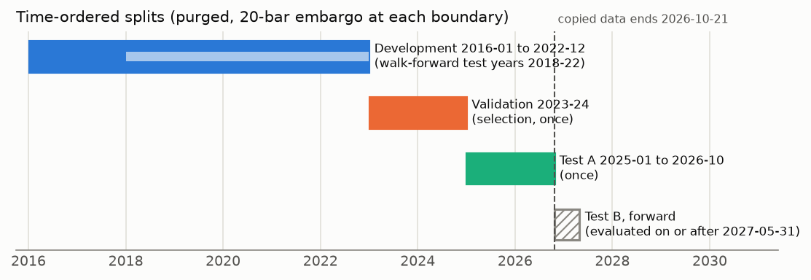
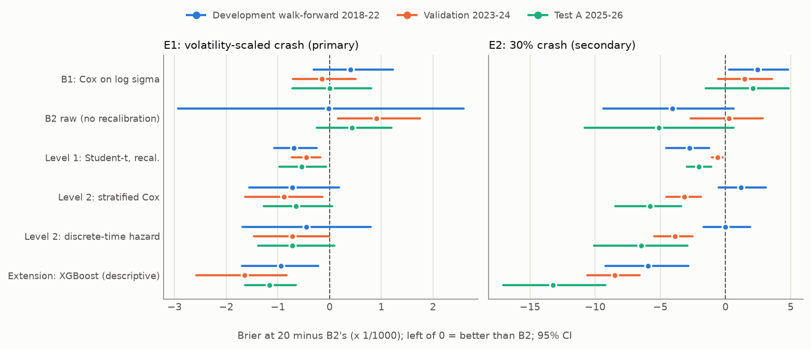
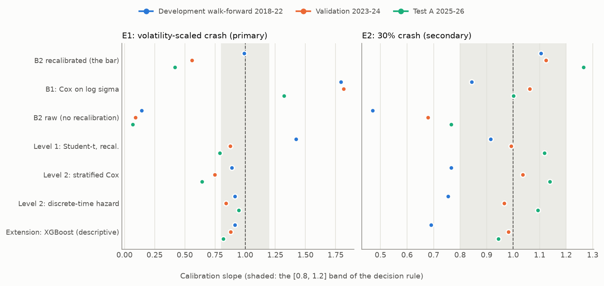
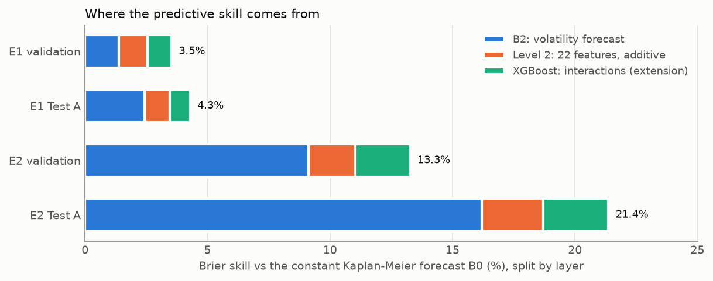
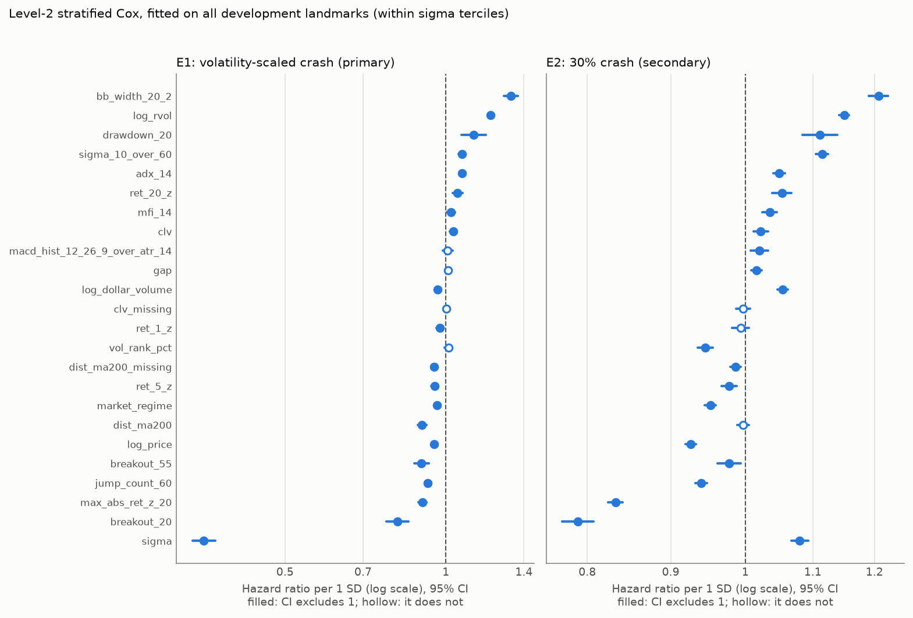
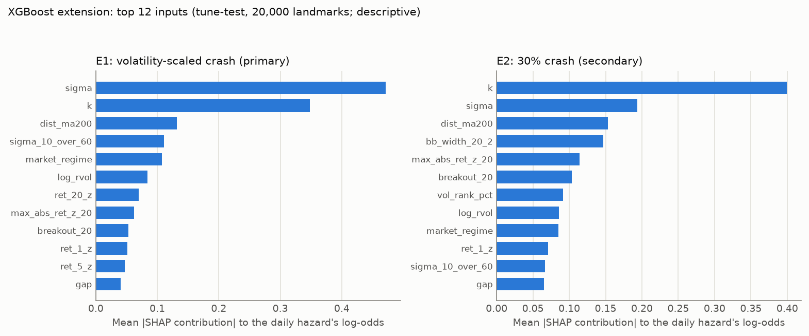
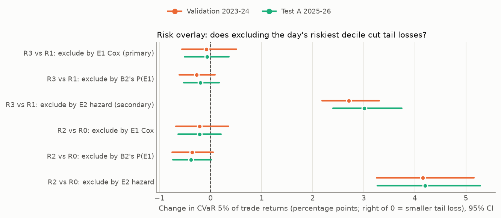

No model beats the volatility baseline with a calibrated forecast, on validation or on the holdout. The null hypothesis stands.
$ cat projects/penny-stock-survival/README
Crash hazard in US penny stocks
Survival analysis · pre-registered · does anything beat a volatility forecast?
For a volatile US small cap ($0.50–$5) on a given day, what is the probability of a crash within the next 20 trading days? And does anything predict it better than a volatility forecast plugged into a random walk? "Nothing beats it" was declared an equally valid answer before any model was fitted.
- 2016-01 → 2026-10
- 3,307 series · 5.26M daily bars
- 589,609 stock-days in the universe
- 22 frozen features
- 180 tests
01. Answer in brief
A discrete-time hazard on 22 features beats B2 on validation and again on the holdout, with calibrated slopes.
Excluding each day's riskiest decile (E2) cuts tail losses, CI [+2.4, +3.7]. Risk reduction only: no rule makes money.
A clean forward test on data from 2026-10-22, evaluated once on or after 2027-05-31.
02. The question
Penny stocks crash often, and volatile ones crash more. That is mostly mechanical: a stock that moves 8% a day will hit a 30% drawdown more often than one that moves 2%. The interesting question is whether anything beyond volatility carries information about the next crash.
From every eligible stock-day t (a landmark), I follow the stock for k = 1…20 bars and record the first bar at which its drawdown from the running peak crosses a threshold. The peak starts at t, never before, and uses the bar low:
D(t,k) = log low(t+k) − log max(price over t…t+k)E1: volatility-scaled crash primary
D(t,k) ≤ −2 · σt · √20. Under a random walk with the stock's own σ, every stock has roughly the same probability of this event, so the "volatile stocks fall more" effect is removed by construction.
E2: 30% crash secondary
D(t,k) ≤ log 0.70. The plain-language version: the low falls at least 30% below the running peak within 20 bars.
The bar to beat (B2): a HAR volatility forecast, fed into a Monte-Carlo first-passage simulation of a driftless random walk, then recalibrated per horizon with a logistic layer. If 22 technical features can't beat that, the honest conclusion is that crash risk here is a volatility question.
Kaplan-Meier, development years: E1 hits 9.8% of penny landmarks within 20 bars, but also 11.3% of a mid-cap reference set, so a volatility-scaled crash is not a penny phenomenon. E2 hits 21.4% of penny landmarks against 3.4% of mid-caps.
03. Design: built to avoid fooling myself

- Frozen specification. Universe, events, 22 features, models, metric and decision rule were written down and tagged in git before any model saw validation data. Design questions were settled by experiments on development data only, each with its decision rule written before it ran.
- Point-in-time data. Universe membership uses the as-traded price and liquidity; returns and events use split-adjusted prices. Series are cut at gaps and ticker reuse, so nothing rolls across a cut. Every feature passes a truncation test: deleting data after t leaves it unchanged.
- One decision rule. A model "adds value" only if the 95% calendar-month block-bootstrap CI of its paired IPCW Brier difference vs B2 (at k = 20) lies entirely below 0 and its calibration slope lies in [0.8, 1.2].
- Every trial logged. 68 model trials with their commit hash, including 4 invalidated by a row-order bug in stratified Cox predictions, which I found on development and kept in the log.
- No refit. Models fitted on 2016–22 are scored as-is on later periods, a strict choice made before the holdout.
Models
| Level | Model | Idea |
|---|---|---|
| B0 | Kaplan-Meier | Constant base rate |
| B1 | Cox on log σ | Trailing volatility only |
| B2 | HAR → random walk → recalibration | The bar: forecast volatility, simulate first passage |
| 1 | B2 with Student-t steps | Fat tails |
| 2 | Stratified Cox PH | 22 features; σ-tercile strata, since Schoenfeld tests rejected proportional hazards |
| 2 | Discrete-time hazard | Logistic on person-period rows, splines for k and 5 features |
| ext. | XGBoost discrete-time hazard | Shallow trees, 3-seed ensemble on GPU; added after the holdout, descriptive |
04. Results


Selected models vs B2 (Δ IPCW Brier at k = 20, 95% CI · calibration slope)
| Event · model | Validation 2023–24 | Test A 2025–26 | Decision |
|---|---|---|---|
| E1 · stratified Cox | −0.00089 [−0.00164, −0.00014] · 0.75 | −0.00065 [−0.00127, +0.00005] · 0.64 | no |
| E1 · XGBoost (descriptive) | −0.00164 [−0.00258, −0.00083] · 0.88 | −0.00117 [−0.00163, −0.00065] · 0.82 | n/a |
| E2 · discrete-time hazard | −0.00389 [−0.00548, −0.00252] · 0.97 | −0.00645 [−0.01011, −0.00292] · 1.09 | yes |
| E2 · XGBoost (descriptive) | −0.00848 [−0.01061, −0.00657] · 0.98 | −0.01325 [−0.01707, −0.00923] · 0.94 | n/a |
B2's own Brier on Test A: 0.06098 (E1) and 0.21480 (E2). Uno's C on Test A, E1: B2 0.638, Cox 0.655, XGBoost 0.682. Observed E2 rate climbed from 24% (development) to 28% (validation) to 37% (Test A).

What the features carry

log_rvol, ≈ 1.2 per SD) and Bollinger width raise the hazard for both events. σ has an inverse effect for E1 even within σ terciles: volatility mean-reverts, so a high trailing σ overstates the coming σ.
05. Does it matter in a portfolio?
A hypothetical book takes one trade per landmark: buy at the next open, sell at the close 20 bars later, 3% round-trip cost. Rules: R0 equal weight, R1 inverse volatility, R2 exclude the day's top decile of predicted risk, R3 = R1 + R2. The metric is CVaR 5%, the mean of the worst 5% of trades, with paired month-block CIs.

| Test A, 3% cost | Mean net return / trade | CVaR 5% | Max drawdown |
|---|---|---|---|
| R0 equal weight | −4.6% | −64.1% | 67% |
| R1 inverse volatility | −3.9% | −60.9% | 63% |
| R3 E2 exclusion | −3.5% | −57.9% | 62% |
No rule makes money. Inverse-volatility weighting alone already improves CVaR by about 3 points. The model-based exclusion adds a similar amount on top. This is a risk-reduction result, not a trading strategy.
06. What I take from it
- A volatility-scaled crash is a volatility question. Once the threshold is scaled by σ, what remains is mostly how well the coming σ is forecast. 22 technical features add at most about 1% of the Brier score, never with a calibrated slope.
- A fixed 30% crash carries information beyond volatility. Relative volume, recent jumps, price level and range features improve the forecast by 2–3% of the Brier score on two out-of-sample periods, and that shows up as lower tail risk.
- Calibration drifts between regimes. Slopes stay usable; intercepts don't. A model fitted on 2016–22 and never refitted under-predicts later, crashier regimes. That is the price of a strict no-refit protocol.
- Model form matters at the margin. Shallow boosted trees on the same features beat both level-2 forms on both events and reach a calibrated slope for E1. So E1's failure is partly a limit of additive / proportional-hazards forms. But E1's total predictability stays tiny.
07. Caveats, stated up front
- Test A is not clean. A sibling project used the same period with a different target, and a feasibility probe touched yearly event rates before the freeze. Test B is the clean test.
- The E2 bar. Against raw (unrecalibrated) B2, the E2 gain on Test A shrinks to about −0.0013 (point estimate, not a pre-registered comparison).
- Post-hoc choices are labelled. The E2 overlay rule was picked after validation; XGBoost was added after the holdout was seen. Both are descriptive until Test B.
- Power. A 6-month Test B gives a standard error of about 0.0007 on the E1 Brier difference, the size of the gains themselves, so it cannot resolve E1. The E2 gains are 2–4 standard errors, so Test B can plausibly confirm them, but not with certainty.
- Delistings are censored, not counted as crashes.
08. Next, and stack
Next: Test B, landmarks from 2026-10-22 to 2027-04-30, scored once with the same fitted models and rules. Then random survival forests, DeepSurv and WTTE-RNN as a comparison (protocol already committed, runs on Google Colab), and point-in-time SEC EDGAR fundamentals under a separate pre-registration.
- Python
- uv
- pandas
- lifelines
- IPCW Brier · Uno's C
- Block bootstrap
- XGBoost (GPU)
- SHAP
- TA-Lib
- Alpaca SIP data
- pytest
- Google Colab